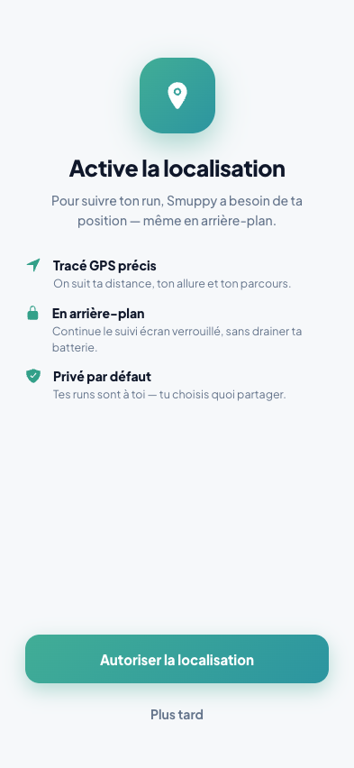
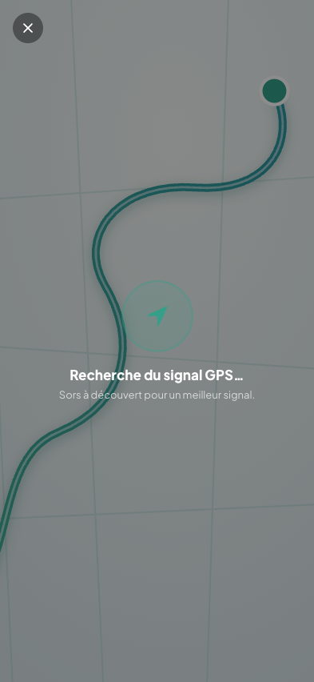
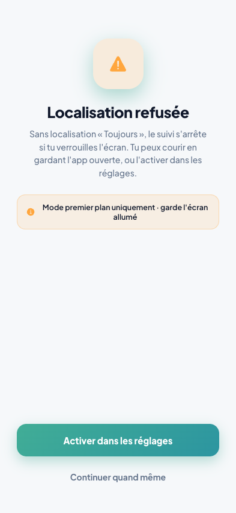
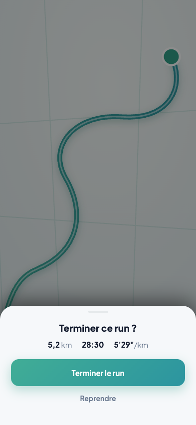
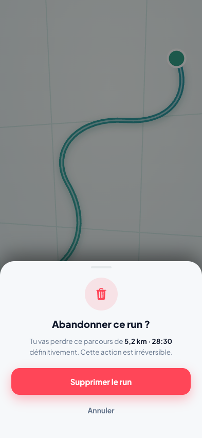
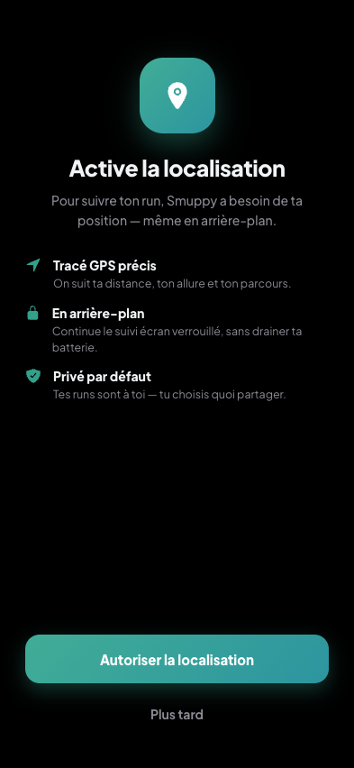
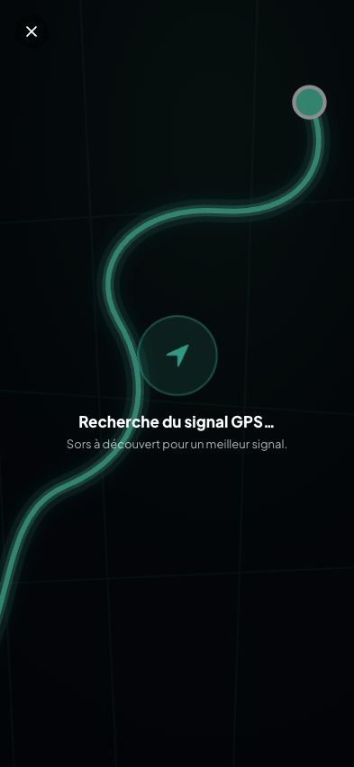
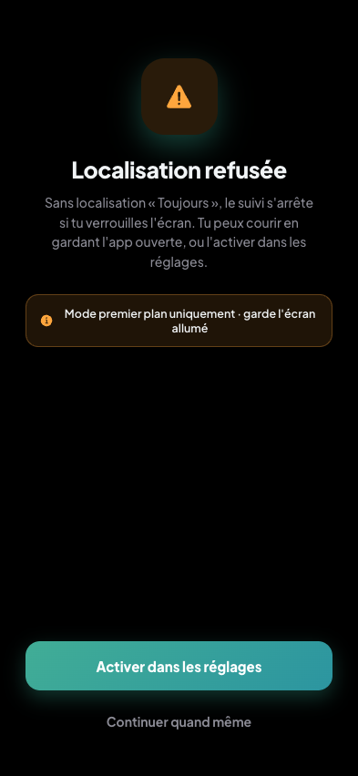
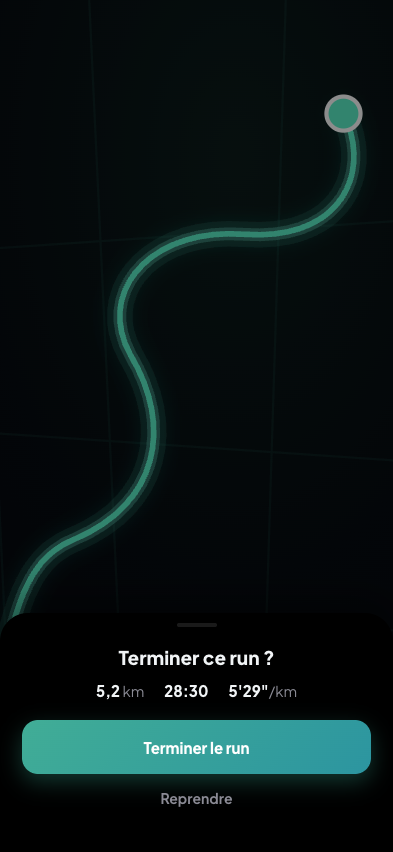
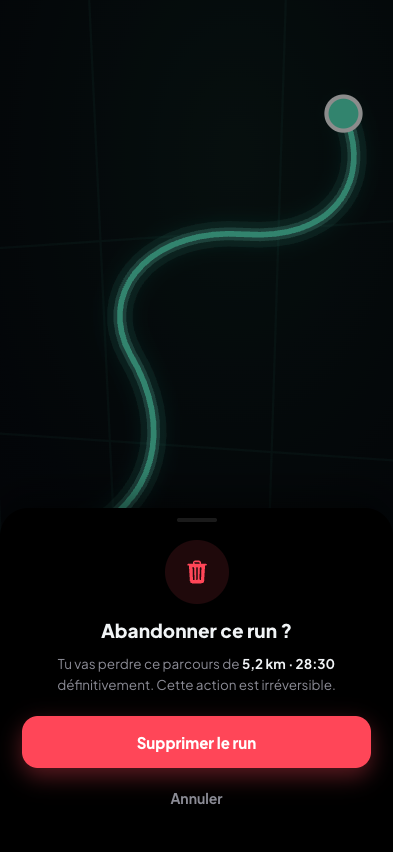

États & popups (edge cases)
Clair

Permission GPS
Recherche signal GPS
GPS refusé (fallback)
Confirmer l'arrêt
Abandonner le runSombre

Permission GPS
Recherche signal GPS
GPS refusé (fallback)
Confirmer l'arrêt
Abandonner le run